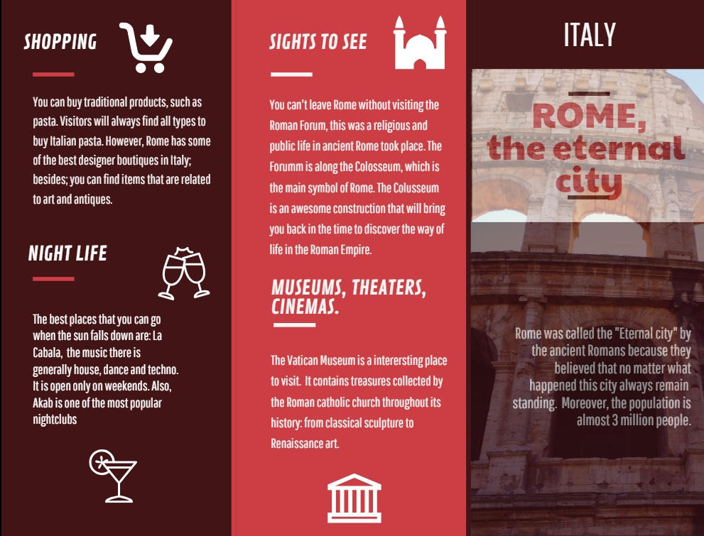
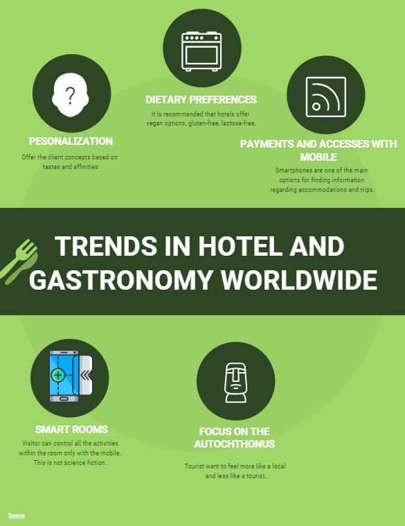
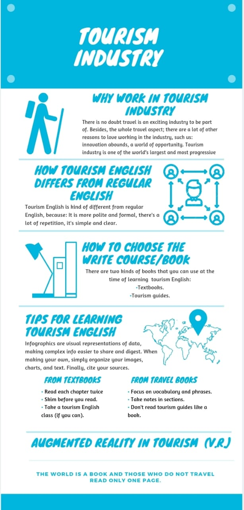
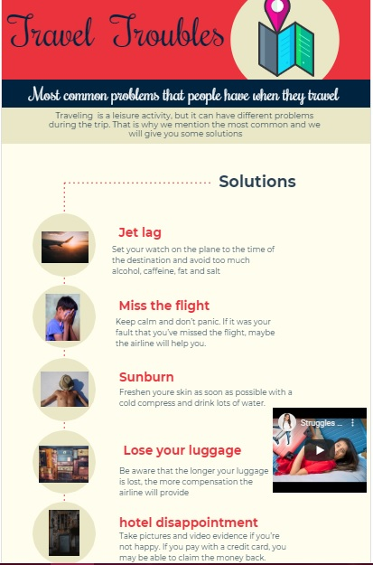
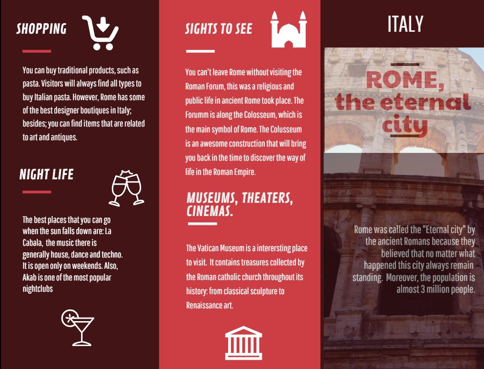
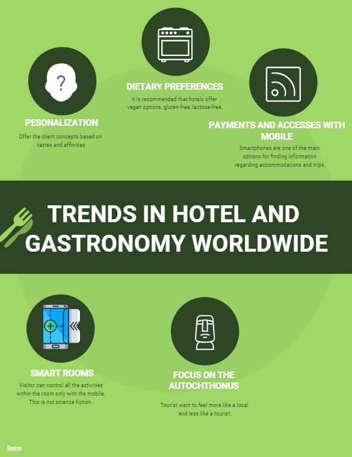
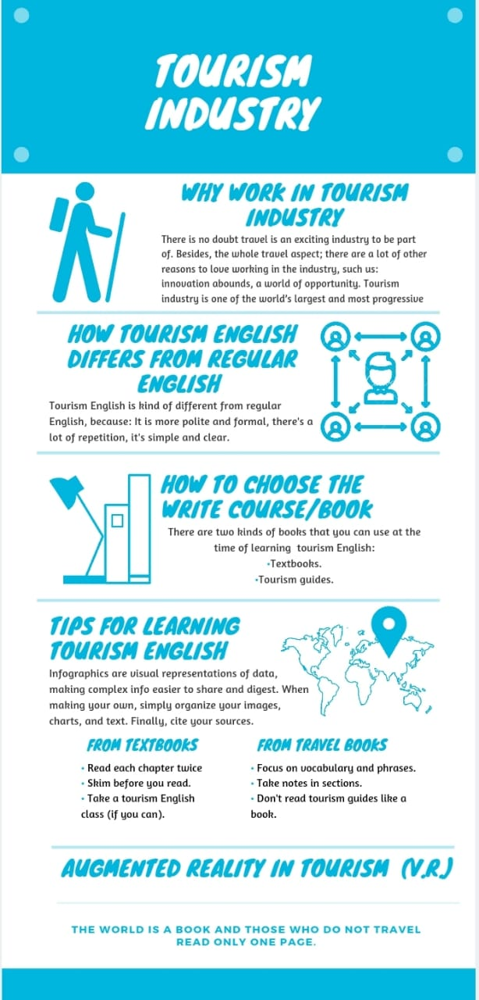
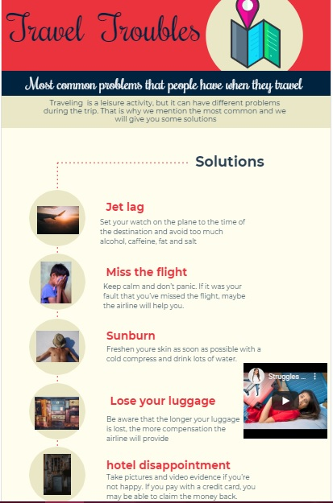

11.Management of creativity and quality in operations and processes
 







TRAVELING PLACES
Nowadays, people are traveling more and more in order to get different objectives.
Currently, there are different types of tourism, the meaning of traveling it is not only for
fun. Tourism now means to be in touch with another culture, different from ours. Moreover,
there are tons of places where you can travel and maybe achieve a goal. This will depend
on the type of tourism that you travel for. At the moment a big trend is the solo travel.
The best places that you can visit according to Laura Itzkowitz (2019) are for example
Matera, Italy. This place is well known because of its architecture and cultural heritage.
Furthermore, Namibia that is located in Southern Africa has an incredible barren landscape
and sand dunes. Itzkowitz also mention Seto Inland Sea, located in Japan. In this place you
will go to three islands, which are Naoshima, Teshima and Megijima.
However, traveling all around the world can be dangerous. That is why Patrick Clarke,
writer of MSN says that safety should always be a priority at traveling. Consequently, the
safest places to travel according Clarke are: Japan, because of their convenience stores.
You will never find only one person working alone it is for sure that another member staff
or officer will be there. Moreover, people there are friendly and it will be weird to find a
thief.
However, even if you chose a safe place, there will be risks. That is why you need to watch
out while you are traveling. The most common risk is theft and losing your belongings. One
idea that you may apply is be minimalist, take only what you need with you. You have to
be able to find the right balance between not being paranoid and not being careless and
over-trusting at the time you travel.
Other riks that you need to know are for instance, health risk. If you are sick and you travel
to another part of the world maybe you will get worse. There are many places that have
different illness that maybe your country does not have. Furthermore, in some places
hospitals are not good enough and you will need to handle the situation, then you will not
able to enjoy the trip. If it is possible get a travel insurance.
Travel is an amazing experience, according the type of tourism that you want, it can be a
interesting adventure that you can share with people. Try different cultures is somehow
difficult but is such a wonderful journey. Follow the goal that you have, if it is traveling do
it, because is something that you will not regret of. There are many places to visit, if you
want to discover the world, you must achieve that goal.
Questions
- 1.- Why is creativity important in a company?
It avoids staying behind, also promotes competitiveness, gives us experience and it helps to take advantage of talent.
- 2.- What is the meaning of creativity?
Use of imagination or original ideas to create something.
- 3.- What does quality mean?
It’s the standard of something as measured against other things of a similar kind; the degree of excellence of something.
Vocabulary
- 1.Quality Management Systems.-
management of the services that are offered. It includes planning, controlling, and improving the elements of an organization. This will influence the satisfaction of the client. (Sistema de gestión de calidad)
- 2. Enviromental Management.-
It is called environmental management to the set of diligences that lead to the comprehensive management of the environmental system. (Gestión del medio ambiente)
- 3. Integrate Management System.-
it is an approach to the integrated management of quality, environment, safety and occupational health. (Sistema de gestión integrado).
By: Saray Silvia Rodriguez Condori
Next